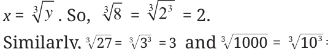
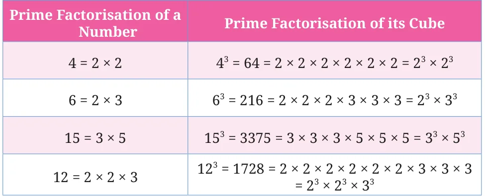

We know that \(8 = 2\) .
We call 2 the cube root of 8 and denote this by \(2 = 8\) .
More generally, if \(y = x\) , then x is the cube root of y. This is denoted by =

=3. In general, \(n = n\) .
How do we find out if a number is a cube? Taking inspiration from the case of squares, let us see if we can use prime factorisations. Let us check if 3375 is a perfect cube.
\(3375 = 3 \times 3 \times 3 \times 5 \times 5 \times 5\).
Can the factors be split into three identical groups? For 3375, we can form three groups of \((3 \times 5)\). So,
\(3375 = (3 \times 5) \times (3 \times 5) \times (3 \times 5)\)
\(= (3 \times 5)3 = 15\) .
Another way is to check if the factors can be grouped into triplet(s):
\(3375 = (3 \times 3 \times 3) \times (5 \times 5 \times 5) = 3 \times 5\) .
This means \(3375 =15\).
Is 500 a perfect cube? \(500 = 2 \times 2 \times 5 \times 5 \times 5\). We see that the factors cannot be split into three identical groups. Therefore, 500 is not a perfect cube.

Observe that each prime factor of a number appears three times in the prime factorisation of its cube.
Find the cube roots of these numbers:
- (i)\(64 =\) (ii) \(512 =\) (iii) \(729 =\)